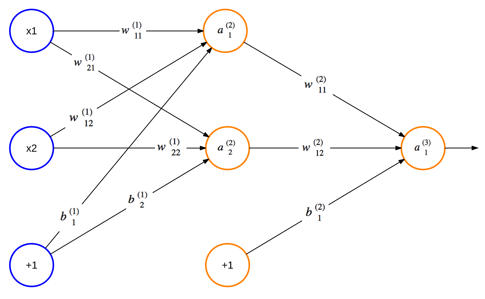

Optical Character Recognition (OCR)
by Marina Samuel
Introduction
What if your computer could wash your dishes, do your laundry, cook you dinner, and clean your home? I think I can safely say that most people would be happy to get a helping hand! But what would it take for a computer to be able to perform these tasks in the same way that humans can?
The famous computer scientist Alan Turing proposed the Turing Test as a way to identify whether a machine could have intelligence indistinguishable from that of a human being. The test involves a human posing questions to two hidden entities, one human, and the other a machine, and trying to identify which is which. If the interrogator is unable to identify the machine, then the machine is considered to have human-level intelligence.
While there is a lot of controversy surrounding whether the Turing Test is a valid assessment of intelligence, and whether we can build such intelligent machines, there is no doubt that machines with some degree of intelligence already exist. There is currently software that helps robots navigate an office and perform small tasks, or help those suffering with Alzheimer’s. More common examples of Artificial Intelligence (A.I.) are the way that Google estimates what you’re looking for when you search for some keywords, or the way that Facebook decides what to put in your news feed.
One well known application of A.I. is Optical Character Recognition (OCR). An OCR system is a piece of software that can take images of handwritten characters as input and interpret them into machine readable text. While you may not think twice when depositing a handwritten cheque into a bank machine , there is some interesting work going on in the background. This chapter will examine a working example of a simple OCR system that recognizes numerical digits using an Artificial Neural Network (ANN). But first, let’s establish a bit more context.
What is Artificial Intelligence?
While Turing’s definition of intelligence sounds reasonable, at the end of the day what constitutes intelligence is fundamentally a philosophical debate. Computer scientists have, however, categorized certain types of systems and algorithms into branches of AI. Each branch is used to solve certain sets of problems. These branches include the following examples, as well as many others:
- Logical and probabilistic deduction and inference based on some predefined knowledge of a world. e.g. Fuzzy inference can help a thermostat decide when to turn on the air conditioning when it detects that the temperature is hot and the atmosphere is humid
- Heuristic search. e.g. Searching can be used to find the best possible next move in a game of chess by searching all possible moves and choosing the one that most improves your position
- Machine learning (ML) with feedback models. e.g. Pattern-recognition problems like OCR.
In general, ML involves using large data sets to train a system to identify patterns. The training data sets may be labelled, meaning the system’s expected outputs are specified for given inputs, or unlabelled meaning expected outputs are not specified. Algorithms that train systems with unlabelled data are called unsupervised algorithms and those that train with labelled data are called supervised. Many ML algorithms and techniques exist for creating OCR systems, of which ANNs are one approach.
Artificial Neural Networks
What Are ANNs?
An ANN is a structure consisting of interconnected nodes that communicate with one another. The structure and its functionality are inspired by neural networks found in a biological brain. Hebbian Theory explains how these networks can learn to identify patterns by physically altering their structure and link strengths. Similarly, a typical ANN (shown in Figure: An Artificial Neural Network) has connections between nodes that have a weight which is updated as the network learns. The nodes labelled “+1” are called biases. The leftmost blue column of nodes are input nodes, the middle column contains hidden nodes, and the rightmost column contains output nodes. There may be many columns of hidden nodes, known as hidden layers.

The values inside all of the circular nodes in Figure: An Artificial Neural Network represent the output of the node. If we call the output of the $n$th node from the top in layer $L$ as a $n(L)$ and the connection between the $i$th node in layer $L$ and the $j$th node in layer $L+1$ as $w^{(L)}_ji$, then the output of node $a^{(2)}_2$ is:$$ a^{(2)}2 = f(w^{(1)}}x_1 + w^{(1){22}x_2 + b^{(1)}) $$
where $f(.)$ is known as the activation function and $b$ is the bias. An
activation function is the decision-maker for what type of output a node has.
A bias is an additional node with a fixed output of 1 that may be added to an
ANN to improve its accuracy. We’ll see more details on both of these in
Section: Designing a Feedforward ANN (neural_network_design.py).
This type of network topology is called a feedforward neural network because there are no cycles in the network. ANNs with nodes whose outputs feed into their inputs are called recurrent neural networks. There are many algorithms that can be applied to train feedforward ANNs; one commonly used algorithm is called backpropagation. The OCR system we will implement in this chapter will use backpropagation.
How Do We Use ANNs?
Like most other ML approaches, the first step for using backpropagation is to decide how to transform or reduce our problem into one that can be solved by an ANN. In other words, how can we manipulate our input data so we can feed it into the ANN? For the case of our OCR system, we can use the positions of the pixels for a given digit as input. It is worth noting that, often times, choosing the input data format is not this simple. If we were analyzing large images to identify shapes in them, for instance, we may need to pre-process the image to identify contours within it. These contours would be the input.
Once we’ve decided on our input data format, what’s next? Since backpropagation is a supervised algorithm, it will need to be trained with labelled data, as mentioned in Section: What is Artificial Intelligence?. Thus, when passing the pixel positions as training input, we must also pass the associated digit. This means that we must find or gather a large data set of drawn digits and associated values.
The next step is to partition the data set into a training set and validation set. The training data is used to run the backpropagation algorithm to set the weights of the ANN. The validation data is used to make predictions using the trained network and compute its accuracy. If we were comparing the performance of backpropagation vs. another algorithm on our data, we would split the data into 50% for training, 25% for comparing performance of the 2 algorithms (validation set) and the final 25% for testing accuracy of the chosen algorithm (test set). Since we’re not comparing algorithms, we can group one of the 25% sets as part of the training set and use 75% of the data to train the network and 25% for validating that it was trained well.
The purpose of identifying the accuracy of the ANN is two-fold. First, it is to avoid the problem of overfitting. Overfitting occurs when the network has a much higher accuracy on predicting the training set than the validation set. Overfitting tells us that the chosen training data does not generalize well enough and needs to be refined. Secondly, testing the accuracy of several different numbers of hidden layers and hidden nodes helps in designing the most optimal ANN size. An optimal ANN size will have enough hidden nodes and layers to make accurate predictions but also as few nodes/connections as possible to reduce computational overhead that may slow down training and predictions. Once the optimal size has been decided and the network has been trained, it’s ready to make predictions!
Design Decisions in a Simple OCR System
In the last few paragraphs we’ve gone over some of the basics of feedforward ANNs and how to use them. Now it’s time to talk about how we can build an OCR system.
First off, we must decide what we want our system to be able to do. To keep things simple, let’s allow users to draw a single digit and be able to train the OCR system with that drawn digit or to request that the system predict what the drawn digit is. While an OCR system could run locally on a single machine, having a client-server setup gives much more flexibility. It makes crowd-sourced training of an ANN possible and allows powerful servers to handle intensive computations.
Our OCR system will consist of 5 main components, divided into 5 files. There will be:
- a client (
ocr.js) - a server (
server.py) - a simple user interface (
ocr.html) - an ANN trained via backpropagation (
ocr.py) - an ANN design script (
neural_network_design.py)
The user interface will be simple: a canvas to draw digits on and buttons to either train the ANN or request a prediction. The client will gather the drawn digit, translate it into an array, and pass it to the server to be processed either as a training sample or as a prediction request. The server will simply route the training or prediction request by making API calls to the ANN module. The ANN module will train the network with an existing data set on its first initialization. It will then save the ANN weights to a file and re-load them on subsequent startups. This module is where the core of training and prediction logic happens. Finally, the design script is for experimenting with different hidden node counts and deciding what works best. Together, these pieces give us a very simplistic, but functional OCR system.
Now that we’ve thought about how the system will work at a high level, it’s time to put the concepts into code!
A Simple Interface (ocr.html)
As mentioned earlier, the first step is to gather data for training the network. We could upload a sequence of hand-written digits to the server, but that would be awkward. Instead, we could have users actually handwrite the digits on the page using an HTML canvas. We could then give them a couple of options to either train or test the network, where training the network also involves specifying what digit was drawn. This way it is possible to easily outsource the data collection by pointing people to a website to receive their input. Here’s some HTML to get us started.
<html>
<head>
<script src="ocr.js"></script>
<link rel="stylesheet" type="text/css" href="ocr.css">
</head>
<body onload="ocrDemo.onLoadFunction()">
<div id="main-container" style="text-align: center;">
<h1>OCR Demo</h1>
<canvas id="canvas" width="200" height="200"></canvas>
<form name="input">
<p>Digit: <input id="digit" type="text"> </p>
<input type="button" value="Train" onclick="ocrDemo.train()">
<input type="button" value="Test" onclick="ocrDemo.test()">
<input type="button" value="Reset" onclick="ocrDemo.resetCanvas();"/>
</form>
</div>
</body>
</html>
An OCR Client (ocr.js)
Since a single pixel on an HTML canvas might be hard to see, we can represent a single pixel for the ANN input as a square of 10x10 real pixels. Thus the real canvas is 200x200 pixels and it is represented by a 20x20 canvas from the perspective of the ANN. The variables below will help us keep track of these measurements.
var ocrDemo = {
CANVAS_WIDTH: 200,
TRANSLATED_WIDTH: 20,
PIXEL_WIDTH: 10, // TRANSLATED_WIDTH = CANVAS_WIDTH / PIXEL_WIDTH
We can then outline the pixels in the new representation so they are easier to
see. Here we have a blue grid generated by drawGrid().
drawGrid: function(ctx) {
for (var x = this.PIXEL_WIDTH, y = this.PIXEL_WIDTH;
x < this.CANVAS_WIDTH; x += this.PIXEL_WIDTH,
y += this.PIXEL_WIDTH) {
ctx.strokeStyle = this.BLUE;
ctx.beginPath();
ctx.moveTo(x, 0);
ctx.lineTo(x, this.CANVAS_WIDTH);
ctx.stroke();
ctx.beginPath();
ctx.moveTo(0, y);
ctx.lineTo(this.CANVAS_WIDTH, y);
ctx.stroke();
}
},
We also need to store the data drawn on the grid in a form that can be sent to
the server. For simplicity, we can have an array called data which labels an
uncoloured, black pixel as 0 and a coloured white pixel as 1. We also need
some mouse listeners on the canvas so we know when to call fillSquare() to
colour a pixel white while a user is drawing a digit. These listeners should
keep track of whether we are in a drawing state and then call fillSquare() to
do some simple math and decide which pixels need to be filled in.
onMouseMove: function(e, ctx, canvas) {
if (!canvas.isDrawing) {
return;
}
this.fillSquare(ctx,
e.clientX - canvas.offsetLeft, e.clientY - canvas.offsetTop);
},
onMouseDown: function(e, ctx, canvas) {
canvas.isDrawing = true;
this.fillSquare(ctx,
e.clientX - canvas.offsetLeft, e.clientY - canvas.offsetTop);
},
onMouseUp: function(e) {
canvas.isDrawing = false;
},
fillSquare: function(ctx, x, y) {
var xPixel = Math.floor(x / this.PIXEL_WIDTH);
var yPixel = Math.floor(y / this.PIXEL_WIDTH);
this.data[((xPixel - 1) * this.TRANSLATED_WIDTH + yPixel) - 1] = 1;
ctx.fillStyle = '#ffffff';
ctx.fillRect(xPixel * this.PIXEL_WIDTH, yPixel * this.PIXEL_WIDTH,
this.PIXEL_WIDTH, this.PIXEL_WIDTH);
},
Now we’re getting closer to the juicy stuff! We need a function that prepares
training data to be sent to the server. Here we have a relatively straight
forward train() function that does some error checking on the data to be sent,
adds it to trainArray and sends it off by calling sendData().
train: function() {
var digitVal = document.getElementById("digit").value;
if (!digitVal || this.data.indexOf(1) < 0) {
alert("Please type and draw a digit value in order to train the network");
return;
}
this.trainArray.push({"y0": this.data, "label": parseInt(digitVal)});
this.trainingRequestCount++;
// Time to send a training batch to the server.
if (this.trainingRequestCount == this.BATCH_SIZE) {
alert("Sending training data to server...");
var json = {
trainArray: this.trainArray,
train: true
};
this.sendData(json);
this.trainingRequestCount = 0;
this.trainArray = [];
}
},
trainingRequestCount,
trainArray, and BATCH_SIZE. What’s happening here is that BATCH_SIZE is
some pre-defined constant for how much training data a client will keep track
of before it sends a batched request to the server to be processed by the OCR.
The main reason to batch requests is to avoid overwhelming the server with many
requests at once. If many clients exist (e.g. many users are on the ocr.html
page training the system), or if another layer existed in the client that takes
scanned drawn digits and translated them to pixels to train the network, a
BATCH_SIZE of 1 would result in many, unnecessary requests. This approach is
good because it gives more flexibility to the client, however, in practice,
batching should also take place on the server, when needed. A denial of service
(DoS) attack could occur in which a malicious client purposely sends many
requests to the server to overwhelm it so that it breaks down.
We will also need a test() function. Similar to train(), it should do a
simple check on the validity of the data and send it off. For test(),
however, no batching occurs since users should be able to request a prediction
and get immediate results.
test: function() {
if (this.data.indexOf(1) < 0) {
alert("Please draw a digit in order to test the network");
return;
}
var json = {
image: this.data,
predict: true
};
this.sendData(json);
},
Finally, we will need some functions to make an HTTP POST request, receive a response, and handle any potential errors along the way.
receiveResponse: function(xmlHttp) {
if (xmlHttp.status != 200) {
alert("Server returned status " + xmlHttp.status);
return;
}
var responseJSON = JSON.parse(xmlHttp.responseText);
if (xmlHttp.responseText && responseJSON.type == "test") {
alert("The neural network predicts you wrote a \'"
+ responseJSON.result + '\'');
}
},
onError: function(e) {
alert("Error occurred while connecting to server: " + e.target.statusText);
},
sendData: function(json) {
var xmlHttp = new XMLHttpRequest();
xmlHttp.open('POST', this.HOST + ":" + this.PORT, false);
xmlHttp.onload = function() { this.receiveResponse(xmlHttp); }.bind(this);
xmlHttp.onerror = function() { this.onError(xmlHttp) }.bind(this);
var msg = JSON.stringify(json);
xmlHttp.setRequestHeader('Content-length', msg.length);
xmlHttp.setRequestHeader("Connection", "close");
xmlHttp.send(msg);
}
A Server (server.py)
Despite being a small server that simply relays information, we still need to consider how to receive and handle the HTTP requests. First we need to decide what kind of HTTP request to use. In the last section, the client is using POST, but why did we decide on this? Since data is being sent to the server, a PUT or POST request makes the most sense. We only need to send a json body and no URL parameters. So in theory, a GET request could have worked as well but would not make sense semantically. The choice between PUT and POST, however, is a long, on-going debate among programmers; KNPLabs summarizes the issues with humour.
Another consideration is whether to send the “train” vs. “predict” requests to
different endpoints (e.g. http://localhost/train and http://localhost/predict)
or the same endpoint which then processes the data separately. In this case, we
can go with the latter approach since the difference between what is done with
the data in each case is minor enough to fit into a short if statement. In
practice, it would be better to have these as separate endpoints if the server
were to do any more detailed processing for each request type. This decision,
in turn impacted what server error codes were used when. For example, a 400
“Bad Request” error is sent when neither “train” or “predict” is specified in
the payload. If separate endpoints were used instead, this would not be an
issue. The processing done in the background by the OCR system may fail for any
reason and if it’s not handled correctly within the server, a 500 “Internal
Server Error” is sent. Again, if the endpoints were separated, there would have
been more room to go into detail to send more appropriate errors. For example,
identifying that an internal server error was actually caused by a bad request.
Finally, we need to decide when and where to initialize the OCR system. A good
approach would be to initialize it within server.py but before the server is
started. This is because on first run, the OCR system needs to train the
network on some pre-existing data the first time it starts and this may take a
few minutes. If the server started before this processing was complete, any
requests to train or predict would throw an exception since the OCR object
would not yet have been initialized, given the current implementation. Another
possible implementation could create some inaccurate initial ANN to be used for
the first few queries while the new ANN is asynchronously trained in the
background. This alternative approach does allow the ANN to be used
immediately, but the implementation is more complex and it would only save on
time on server startup if the servers are reset. This type of implementation
would be more beneficial for an OCR service that requires high availability.
Here we have the majority of our server code in one short function that handles POST requests.
def do_POST(s):
response_code = 200
response = ""
var_len = int(s.headers.get('Content-Length'))
content = s.rfile.read(var_len);
payload = json.loads(content);
if payload.get('train'):
nn.train(payload['trainArray'])
nn.save()
elif payload.get('predict'):
try:
response = {
"type":"test",
"result":nn.predict(str(payload['image']))
}
except:
response_code = 500
else:
response_code = 400
s.send_response(response_code)
s.send_header("Content-type", "application/json")
s.send_header("Access-Control-Allow-Origin", "*")
s.end_headers()
if response:
s.wfile.write(json.dumps(response))
return
Designing a Feedforward ANN (neural_network_design.py)
When designing a feedforward ANN, there are a few factors we must consider. The first is what activation function to use. We mentioned activation functions earlier as the decision-maker for a node’s output. The type of the decision an activation function makes will help us decide which one to use. In our case, we will be designing an ANN that outputs a value between 0 and 1 for each digit (0-9). Values closer to 1 would mean the ANN predicts this is the drawn digit and values closer to 0 would mean it’s predicted to not be the drawn digit. Thus, we want an activation function that would have outputs either close to 0 or close to 1. We also need a function that is differentiable because we will need the derivative for our backpropagation computation. A commonly used function in this case is the sigmoid because it satisfies both these constraints. StatSoft provides a nice list of common activation functions and their properties.
A second factor to consider is whether we want to include biases. We’ve mentioned biases a couple of times before but haven’t really talked about what they are or why we use them. Let’s try to understand this by going back to how the output of a node is computed in Figure: An Artificial Neural Network. Suppose we had a single input node and a single output node, our output formula would be $y = f(wx)$, where $y$ is the output, $f()$ is the activation function, $w$ is the weight for the link between the nodes, and $x$ is the variable input for the node. The bias is essentially a node whose output is always $1$. This would change the output formula to $y = f(wx + b)$ where $b$ is the weight of the connection between the bias node and the next node. If we consider $w$ and $b$ as constants and $x$ as a variable, then adding a bias adds a constant to our linear function input to $f(.)$.
Adding the bias therefore allows for a shift in the $y$-intercept and in general gives more flexibility for the output of a node. It’s often good practice to include biases, especially for ANNs with a small number of inputs and outputs. Biases allow for more flexibility in the output of the ANN and thus provide the ANN with more room for accuracy. Without biases, we’re less likely to make correct predictions with our ANN or would need more hidden nodes to make more accurate predictions.
Other factors to consider are the number of hidden layers and the number of hidden nodes per layer. For larger ANNs with many inputs and outputs, these numbers are decided by trying different values and testing the network’s performance. In this case, the performance is measured by training an ANN of a given size and seeing what percentage of the validation set is classified correctly. In most cases, a single hidden layer is sufficient for decent performance, so we only experiment with the number of hidden nodes here.
# Try various number of hidden nodes and see what performs best
for i in xrange(5, 50, 5):
nn = OCRNeuralNetwork(i, data_matrix, data_labels, train_indices, False)
performance = str(test(data_matrix, data_labels, test_indices, nn))
print "{i} Hidden Nodes: {val}".format(i=i, val=performance)
Here we initialize an ANN with between 5 to 50 hidden nodes in increments of 5.
We then call the test() function.
def test(data_matrix, data_labels, test_indices, nn):
avg_sum = 0
for j in xrange(100):
correct_guess_count = 0
for i in test_indices:
test = data_matrix[i]
prediction = nn.predict(test)
if data_labels[i] == prediction:
correct_guess_count += 1
avg_sum += (correct_guess_count / float(len(test_indices)))
return avg_sum / 100
The inner loop is counting the number of correct classifications which are then
divided by the number of attempted classifications at the end. This gives a
ratio or percentage accuracy for the ANN. Since each time an ANN is trained,
its weights may be slightly different, we repeat this process 100 times in the
outer loop so we can take an average of this particular ANN configuration’s
accuracy. In our case, a sample run of neural_network_design.py looks like the
following:
PERFORMANCE
-----------
5 Hidden Nodes: 0.7792
10 Hidden Nodes: 0.8704
15 Hidden Nodes: 0.8808
20 Hidden Nodes: 0.8864
25 Hidden Nodes: 0.8808
30 Hidden Nodes: 0.888
35 Hidden Nodes: 0.8904
40 Hidden Nodes: 0.8896
45 Hidden Nodes: 0.8928
From this output we can conclude that 15 hidden nodes would be most optimal. Adding 5 nodes from 10 to 15 gets us ~1% more accuracy, whereas improving the accuracy by another 1% would require adding another 20 nodes. Increasing the hidden node count also increases computational overhead. So it would take networks with more hidden nodes longer to be trained and to make predictions. Thus we choose to use the last hidden node count that resulted in a dramatic increase in accuracy. Of course, it’s possible when designing an ANN that computational overhead is no problem and it’s top priority to have the most accurate ANN possible. In that case it would be better to choose 45 hidden nodes instead of 15.
Core OCR Functionality
In this section we’ll talk about how the actual training occurs via backpropagation, how we can use the network to make predictions, and other key design decisions for core functionality.
Training via Backpropagation (ocr.py)
We use the backpropagation algorithm to train our ANN. It consists of 4 main steps that are repeated for every sample in the training set, updating the ANN weights each time.
First, we initialize the weights to small (between -1 and 1) random values. In
our case, we initialize them to values between -0.06 and 0.06 and store them in
matrices theta1, theta2, input_layer_bias, and hidden_layer_bias. Since
every node in a layer links to every node in the next layer we can create a
matrix that has m rows and n columns where n is the number of nodes in one
layer and m is the number of nodes in the adjacent layer. This matrix would
represent all the weights for the links between these two layers. Here theta1
has 400 columns for our 20x20 pixel inputs and num_hidden_nodes rows.
Likewise, theta2 represents the links between the hidden layer and output
layer. It has num_hidden_nodes columns and NUM_DIGITS (10) rows. The
other two vectors (1 row), input_layer_bias and hidden_layer_bias represent
the biases.
def _rand_initialize_weights(self, size_in, size_out):
return [((x * 0.12) - 0.06) for x in np.random.rand(size_out, size_in)]
self.theta1 = self._rand_initialize_weights(400, num_hidden_nodes)
self.theta2 = self._rand_initialize_weights(num_hidden_nodes, 10)
self.input_layer_bias = self._rand_initialize_weights(1,
num_hidden_nodes)
self.hidden_layer_bias = self._rand_initialize_weights(1, 10)
The second step is forward propagation, which is essentially computing the
node outputs as described in Section: What Are ANNs?, layer by layer starting from
the input nodes. Here, y0 is an array of size 400 with the inputs we wish to
use to train the ANN. We multiply theta1 by y0 transposed so that we have two
matrices with sizes (num_hidden_nodes x 400) * (400 x 1) and have a resulting
vector of outputs for the hidden layer of size num_hidden_nodes. We then add
the bias vector and apply the vectorized sigmoid activation function to this
output vector, giving us y1. y1 is the output vector of our hidden layer. The
same process is repeated again to compute y2 for the output nodes. y2 is now
our output layer vector with values representing the likelihood that their
index is the drawn number. For example if someone draws an 8, the value of y2
at the 8th index will be the largest if the ANN has made the correct
prediction. However, 6 may have a higher likelihood than 1 of being the drawn
digit since it looks more similar to 8 and is more likely to use up the same
pixels to be drawn as the 8. y2 becomes more accurate with each additional
drawn digit the ANN is trained with.
# The sigmoid activation function. Operates on scalars.
def _sigmoid_scalar(self, z):
return 1 / (1 + math.e ** -z)
y1 = np.dot(np.mat(self.theta1), np.mat(data['y0']).T)
sum1 = y1 + np.mat(self.input_layer_bias) # Add the bias
y1 = self.sigmoid(sum1)
y2 = np.dot(np.array(self.theta2), y1)
y2 = np.add(y2, self.hidden_layer_bias) # Add the bias
y2 = self.sigmoid(y2)
The third step is back propagation, which involves computing the errors at the
output nodes then at every intermediate layer back towards the input. Here we
start by creating an expected output vector, actual_vals, with a 1 at the index
of the digit that represents the value of the drawn digit and 0s otherwise. The
vector of errors at the output nodes, output_errors, is computed by subtracting
the actual output vector, y2, from actual_vals. For every hidden layer
afterwards, we compute two components. First, we have the next layer’s
transposed weight matrix multiplied by its output errors. Then we have the
derivative of the activation function applied to the previous layer. We then
perform an element-wise multiplication on these two components, giving a vector
of errors for a hidden layer. Here we call this hidden_errors.
actual_vals = [0] * 10
actual_vals[data['label']] = 1
output_errors = np.mat(actual_vals).T - np.mat(y2)
hidden_errors = np.multiply(np.dot(np.mat(self.theta2).T, output_errors),
self.sigmoid_prime(sum1))
Weight updates that adjust the ANN weights based on the errors computed earlier. Weights are updated at each layer via matrix multiplication. The error matrix at each layer is multiplied by the output matrix of the previous layer. This product is then multiplied by a scalar called the learning rate and added to the weight matrix. The learning rate is a value between 0 and 1 that influences the speed and accuracy of learning in the ANN. Larger learning rate values will generate an ANN that learns quickly but is less accurate, while smaller values will will generate an ANN that learns slower but is more accurate. In our case, we have a relatively small value for learning rate, 0.1. This works well since we do not need the ANN to be immediately trained in order for a user to continue making train or predict requests. Biases are updated by simply multiplying the learning rate by the layer’s error vector.
self.theta1 += self.LEARNING_RATE * np.dot(np.mat(hidden_errors),
np.mat(data['y0']))
self.theta2 += self.LEARNING_RATE * np.dot(np.mat(output_errors),
np.mat(y1).T)
self.hidden_layer_bias += self.LEARNING_RATE * output_errors
self.input_layer_bias += self.LEARNING_RATE * hidden_errors
Testing a Trained Network (ocr.py)
Once an ANN has been trained via backpropagation, it is fairly straightforward
to use it for making predictions. As we can see here, we start by computing the
output of the ANN, y2, exactly the way we did in step 2 of backpropagation.
Then we look for the index in the vector with the maximum value. This index is
the digit predicted by the ANN.
def predict(self, test):
y1 = np.dot(np.mat(self.theta1), np.mat(test).T)
y1 = y1 + np.mat(self.input_layer_bias) # Add the bias
y1 = self.sigmoid(y1)
y2 = np.dot(np.array(self.theta2), y1)
y2 = np.add(y2, self.hidden_layer_bias) # Add the bias
y2 = self.sigmoid(y2)
results = y2.T.tolist()[0]
return results.index(max(results))
Other Design Decisions (ocr.py)
Many resources are available online that go into greater detail on the implementation of backpropagation. One good resource is from a course by the University of Willamette. It goes over the steps of backpropagation and then explains how it can be translated into matrix form. While the amount of computation using matrices is the same as using loops, the benefit is that the code is simpler and easier to read with fewer nested loops. As we can see, the entire training process is written in under 25 lines of code using matrix algebra.
As mentioned in the introduction of Section: Design Decisions in a Simple OCR System, persisting the weights of the ANN means we do not lose the progress made in training it when the server is shut down or abruptly goes down for any reason. We persist the weights by writing them as JSON to a file. On startup, the OCR loads the ANN’s saved weights to memory. The save function is not called internally by the OCR but is up to the server to decide when to perform a save. In our case, the server saves the weights after each update. This is a quick and simple solution but it is not optimal since writing to disk is time consuming. This also prevents us from handling multiple concurrent requests since there is no mechanism to prevent simultaneous writes to the same file. In a more sophisticated server, saves could perhaps be done on shutdown or once every few minutes with some form of locking or a timestamp protocol to ensure no data loss.
def save(self):
if not self._use_file:
return
json_neural_network = {
"theta1":[np_mat.tolist()[0] for np_mat in self.theta1],
"theta2":[np_mat.tolist()[0] for np_mat in self.theta2],
"b1":self.input_layer_bias[0].tolist()[0],
"b2":self.hidden_layer_bias[0].tolist()[0]
};
with open(OCRNeuralNetwork.NN_FILE_PATH,'w') as nnFile:
json.dump(json_neural_network, nnFile)
def _load(self):
if not self._use_file:
return
with open(OCRNeuralNetwork.NN_FILE_PATH) as nnFile:
nn = json.load(nnFile)
self.theta1 = [np.array(li) for li in nn['theta1']]
self.theta2 = [np.array(li) for li in nn['theta2']]
self.input_layer_bias = [np.array(nn['b1'][0])]
self.hidden_layer_bias = [np.array(nn['b2'][0])]
Conclusion
Now that we’ve learned about AI, ANNs, backpropagation, and building an end-to-end OCR system, let’s recap the highlights of this chapter and the big picture.
We started off the chapter by giving background on AI, ANNs, and roughly what we will be implementing. We discussed what AI is and examples of how it’s used. We saw that AI is essentially a set of algorithms or problem-solving approaches that can provide an answer to a question in a similar manner as a human would. We then took a look at the structure of a Feedforward ANN. We learned that computing the output at a given node was as simple as summing the products of the outputs of the previous nodes and their connecting weights. We talked about how to use an ANN by first formatting the input and partitioning the data into training and validation sets.
Once we had some background, we started talking about creating a web-based, client-server system that would handle user requests to train or test the OCR. We then discussed how the client would interpret the drawn pixels into an array and perform an HTTP request to the OCR server to perform the training or testing. We discussed how our simple server read requests and how to design an ANN by testing performance of several hidden node counts. We finished off by going through the core training and testing code for backpropagation.
Although we’ve built a seemingly functional OCR system, this chapter simply scratches the surface of how a real OCR system might work. More sophisticated OCR systems could have pre-processed inputs, use hybrid ML algorithms, have more extensive design phases, or other further optimizations.